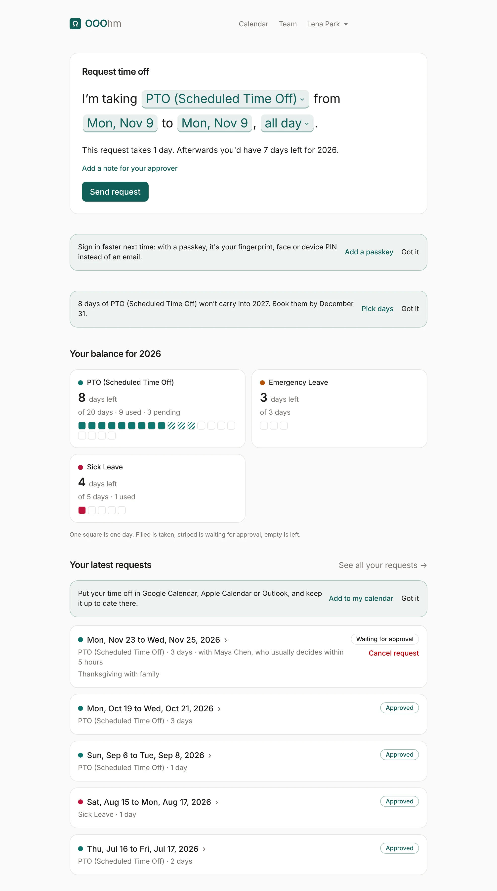
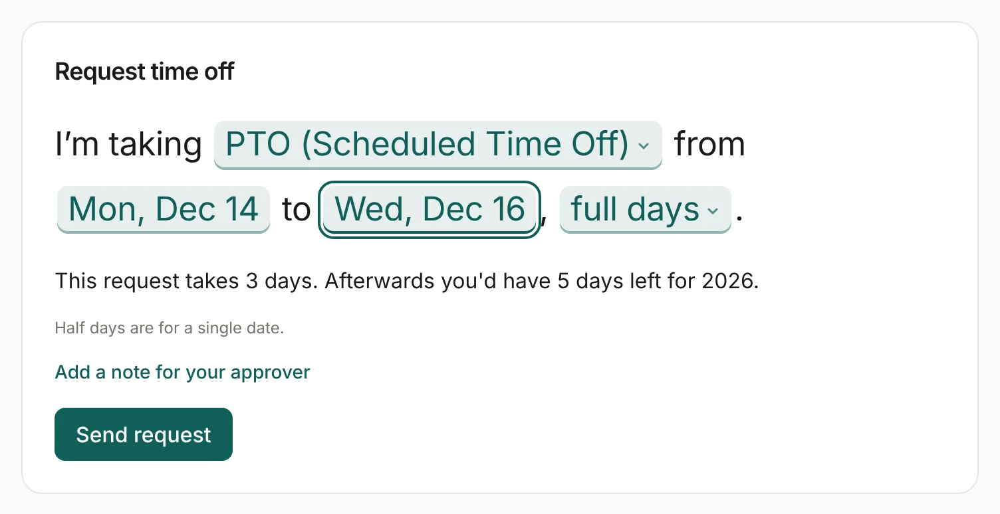
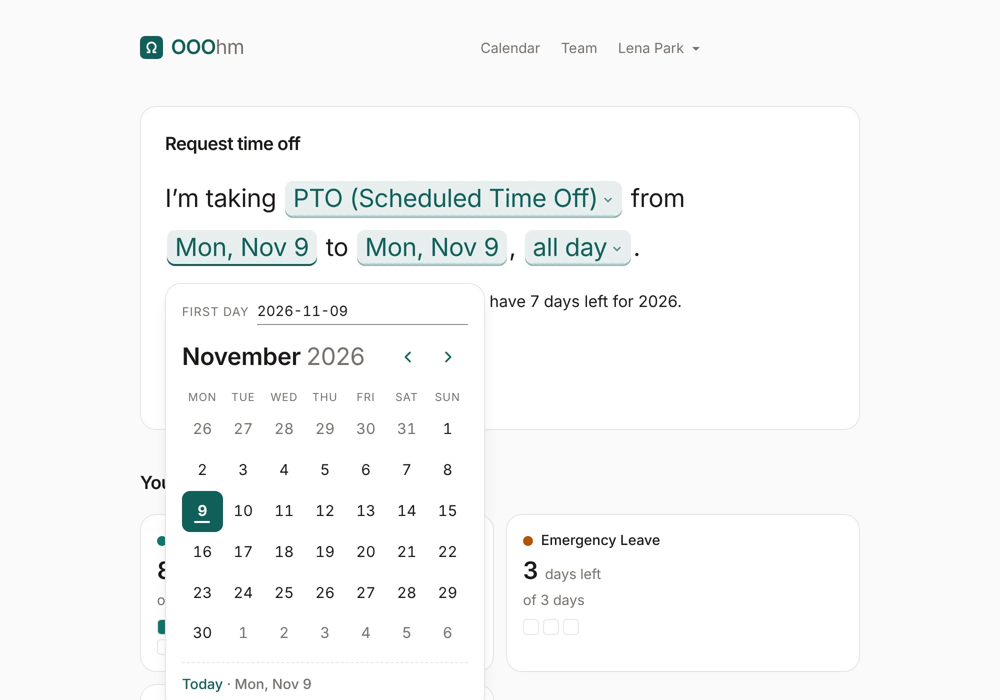
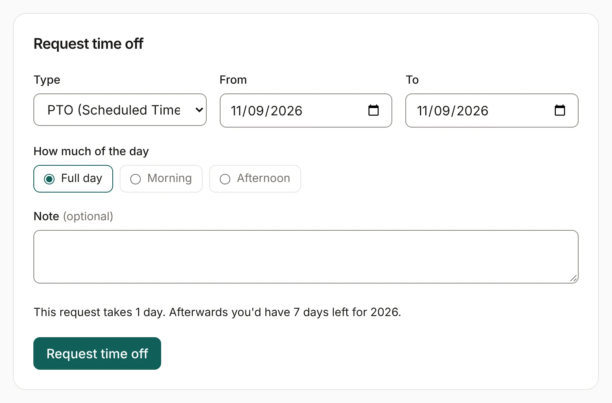
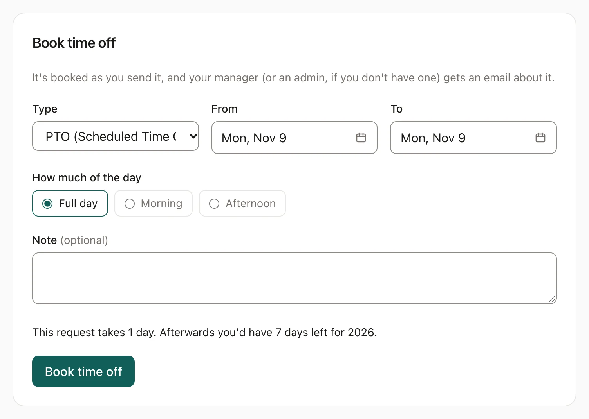
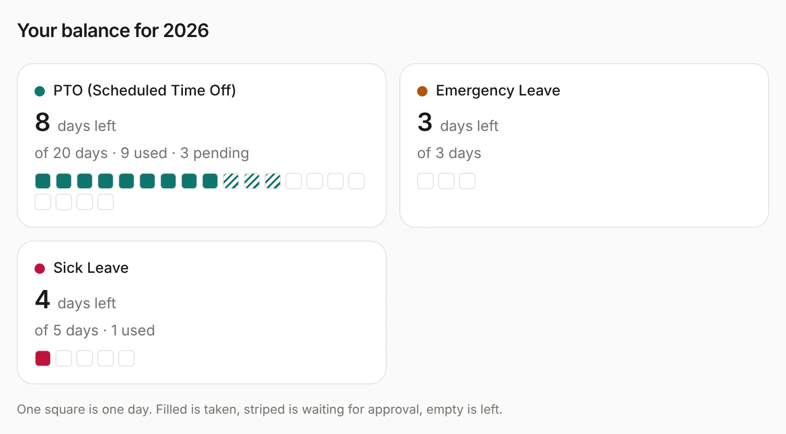
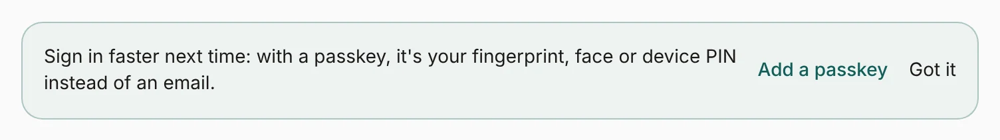
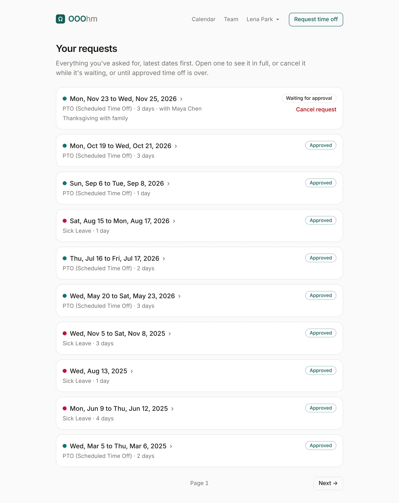
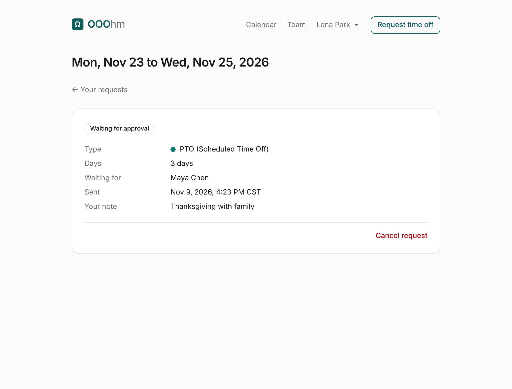

Asking for time off
Home is where you ask for time off. It has one main action, the request, then your balance and your latest requests.

The request
Your company asks for time off in one of two styles. An admin picks it under Appearance; both send the same request and count days the same way.
The sentence
The request reads as one sentence with the choices inside it: I'm taking PTO from Mon, Dec 14 to Wed, Dec 16, full days. Choose the leave type, the first day, the last day and how much of the day.

Each date opens a calendar. Pick a day, or type it as YYYY-MM-DD in the field at the top. The arrow keys move between days and Enter picks one.

The form
The form asks the same things as labelled fields: Type, From, To, How much of the day (Full day, Morning or Afternoon) and an optional Note. From and To open the same calendar as the sentence.

What the request tells you before you send it
As you choose, a line under the request says what it would cost: This request takes 3 days. Afterwards you'd have 5 days left for 2026. Weekends, other non-working days and company holidays never count. If the request can't be sent (it overlaps time off you already have, or it would take more than you have left), the line says why, in red.
- Half days (Morning or Afternoon) are for a single date and count as 0.5.
- Add a note for your approver opens a box for a short note. Your approver sees it in their inbox and in the request email.
- If your department has a coverage limit and too many people would be off at once, you see a warning. It doesn't stop you sending.
Send request sends it to your approver: your manager, else your department's manager, else an admin. They get an email, and the request shows as Waiting for approval until they decide. If you approve your own requests (an admin sets this per person), it's approved as soon as you send it.
When your company doesn't ask for approval
If an admin set approval to Just let us know (Admin → Company), the request becomes Book time off: it's booked as soon as you send it, and your manager (or an admin) gets a heads-up email instead of a request.

Your balance
Under the request, a card for each leave type shows what you have left this year, out of how many, and how many are used or waiting for approval. One square is one day: filled is taken, striped is waiting for approval, empty is left.

Notes on Home
A few quiet notes show on Home when they apply. Got it hides one in this browser for good.

- Add a passkey, until you have one.
- Days that won't carry over: from November 1, the days of your main leave type (the first one in the list, usually vacation) that won't carry into next year, with Pick days to open the calendar. Sick days never get this note.
- Add to my calendar, once you have approved time off and no calendar subscription yet.
Your requests
See all your requests opens every request you've made, latest dates first, a page at a time.

Each request has a status: Waiting for approval, Approved, Declined or Cancelled. A waiting request also says who it's with and how quickly they usually decide (with Maya Chen, who usually decides within 5 hours). Open one to see it in full: the type, the days, who it's waiting for (or who decided it and when), your note and any reason they gave.

Cancelling
Cancel request works while a request is waiting, and on approved time off until it's over. The request isn't cancelled straight away: you get 20 seconds to Undo. Once it goes through, the days are back in your balance, and you and your approver each get an email (to you, to the approver). Time off that's already over can't be cancelled; a manager or admin can remove it to correct the record (see Who's out).